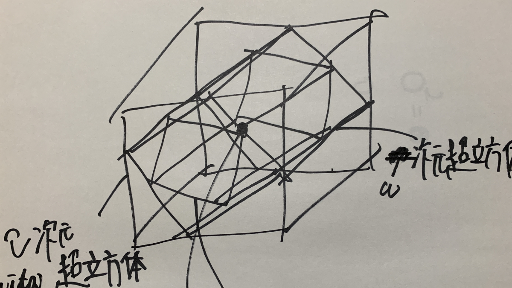

Reiji's
Explorations
in Sound & Structure
Home
>
Conceptual and Spatial Inquiry
Conceptual and Spatial Inquiry

July 29, 2025
Vita Theory – A Model Beyond Infinity
This theory represents a conceptual model that Reiji (age 9) intuitively envisioned in daily life, exploring numbers that lie "beyond infinity." Using mathematical tools such as logarithms and the arctangent function, it constructs a multi-layered...